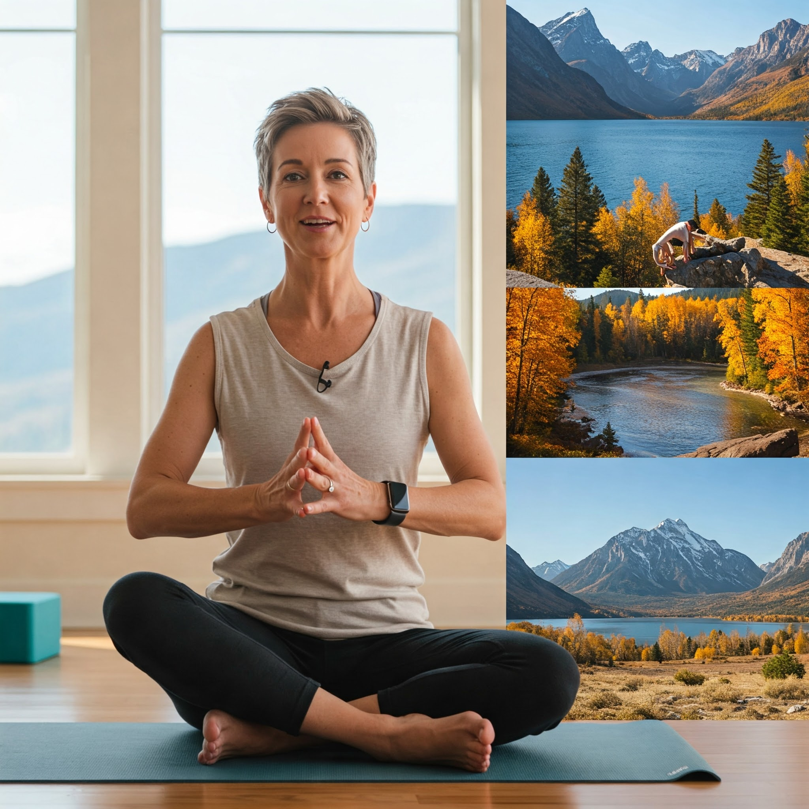
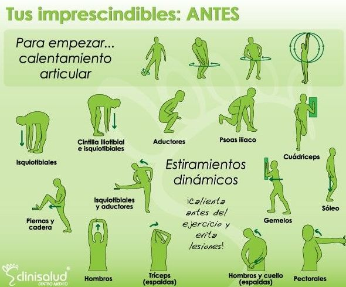
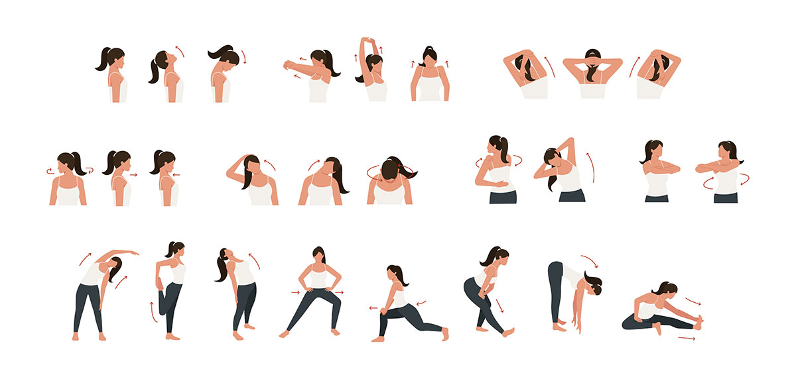

Aprende la técnica correcta, los beneficios y consejos para tus entrenamientos.
Extensión de Tríceps con Polea y Cuerda
Publicado el 24 de abril de 2025 por el Equipo de FitConnect
La extensión de tríceps con polea y cuerda es un ejercicio efectivo para aislar y fortalecer los músculos tríceps. Aquí te mostramos cómo realizarlo correctamente:
Colócate de pie frente a una máquina de poleas con el accesorio de cuerda unido a la polea alta. Agarra los extremos de la cuerda con un agarre prono (palmas hacia abajo), manteniendo las manos a la altura de los hombros.
Mantén los codos pegados a los costados de tu cuerpo y ligeramente flexionados. Esta será tu posición inicial.
Contrae los tríceps y extiende los brazos hacia abajo, separando los extremos de la cuerda ligeramente al final del movimiento. Imagina que estás tratando de dibujar una "V" invertida con la cuerda.
Mantén la contracción en la parte inferior por un breve instante, sintiendo el trabajo en tus tríceps.
Regresa lentamente a la posición inicial, controlando el movimiento y permitiendo que tus tríceps se estiren.
Repite el movimiento durante el número deseado de repeticiones.
Introducción al Yoga y Beneficios
Publicado el 24 de abril de 2025 por el Equipo de FitConnect
El yoga es una práctica física, mental y espiritual tradicional que se originó en la India. Combina posturas físicas (asanas), técnicas de respiración (pranayama) y meditación o relajación (dhyana). Practicar yoga regularmente puede aportar numerosos beneficios para la salud:
Mejora la flexibilidad y la fuerza muscular.
Reduce el estrés y la ansiedad.
Mejora la postura y el equilibrio.
Aumenta la concentración y la conciencia corporal.
Puede aliviar dolores crónicos, como el dolor de espalda.
A continuación, te presentamos una breve demostración de una secuencia de yoga para principiantes:
Dominando la Sentadilla con Barra: Técnica y Consejos
Publicado el 24 de abril de 2025 por el Entrenador Personal de FitConnect, Carlos López
La sentadilla con barra es uno de los ejercicios más fundamentales y efectivos para trabajar la fuerza de las piernas y los glúteos. Dominar la técnica es crucial para evitar lesiones y maximizar sus beneficios. Aquí te mostramos cómo realizarla correctamente:
Coloca la barra sobre la parte superior de tu espalda, apoyada en la parte carnosa de tus trapecios, no en el cuello. Sujeta la barra con las manos a una anchura cómoda, manteniendo los codos hacia abajo.
Ponte de pie con los pies ligeramente más anchos que el ancho de los hombros, con los dedos apuntando ligeramente hacia afuera.
Inhala profundamente y activa tu core. Comienza el movimiento flexionando las caderas hacia atrás como si fueras a sentarte en una silla, manteniendo la espalda recta y el pecho hacia arriba.
Baja hasta que tus muslos estén al menos paralelos al suelo, idealmente un poco más abajo (sentadilla profunda), manteniendo las rodillas alineadas con tus pies y evitando que se desplacen hacia adentro.
Empuja a través de tus talones para volver a la posición inicial, manteniendo la tensión en tus músculos. Exhala al subir.
Repite el movimiento durante el número deseado de repeticiones.
Consejo: Mantén la mirada hacia adelante o ligeramente hacia arriba durante todo el movimiento para ayudar a mantener la espalda recta.
Yoga para la Relajación: Secuencia Suave para Reducir el Estrés
Publicado el 24 de abril de 2025 por la Instructora de Yoga de FitConnect, Ana María Gómez
Encontrar momentos de calma en nuestro día a día es esencial para la salud mental y física. Esta suave secuencia de yoga está diseñada para ayudarte a liberar tensión y encontrar la relajación:
Sukhasana (Postura Fácil): Siéntate con las piernas cruzadas de manera cómoda. Relaja las manos sobre las rodillas o el regazo y cierra los ojos suavemente. Concéntrate en tu respiración durante unos minutos.
Marjaryasana a Bitilasana (Postura del Gato-Vaca): Colócate a cuatro patas, con las manos debajo de los hombros y las rodillas debajo de las caderas. Inhala y arquea suavemente la espalda hacia abajo (Vaca), llevando el ombligo hacia el suelo y levantando la cabeza y el coxis. Exhala y redondea la espalda hacia el techo (Gato), metiendo la barbilla hacia el pecho y el coxis hacia abajo. Repite este movimiento suavemente varias veces.
Balasana (Postura del Niño): Desde la postura a cuatro patas, junta los dedos gordos de los pies y separa ligeramente las rodillas. Exhala y lleva las caderas hacia los talones, extendiendo los brazos hacia adelante o hacia atrás a lo largo del cuerpo. Descansa la frente en el suelo. Mantén esta postura durante varias respiraciones profundas.
Savasana (Postura del Cadáver): Túmbate boca arriba con las piernas extendidas y los brazos a los lados del cuerpo, con las palmas hacia arriba. Relaja completamente todo el cuerpo, desde los dedos de los pies hasta la coronilla. Permanece en esta postura durante al menos 5-10 minutos, permitiendo que tu cuerpo y mente se relajen por completo.
Beneficio: Esta secuencia suave ayuda a liberar tensión en la espalda y las caderas, calma el sistema nervioso y promueve la relajación profunda.

Estiramientos Esenciales para Después del Entrenamiento
Publicado el 24 de abril de 2025 por la Fisioterapeuta de FitConnect, Laura Fernández
Los estiramientos post-entrenamiento son cruciales para reducir la rigidez muscular, mejorar la flexibilidad y prevenir lesiones. Aquí tienes algunos estiramientos esenciales que puedes incluir en tu rutina:
Estiramiento de Cuádriceps: De pie, sujeta un pie con la mano del mismo lado y llévalo hacia tu glúteo, sintiendo el estiramiento en la parte frontal del muslo. Mantén la rodilla apuntando hacia el suelo. Mantén durante 20-30 segundos y repite con la otra pierna.
Estiramiento de Isquiotibiales: Siéntate en el suelo con una pierna extendida y la otra flexionada, con la planta del pie contra el muslo de la pierna extendida. Inclínate hacia adelante desde las caderas, tratando de alcanzar los dedos del pie de la pierna extendida. Siente el estiramiento en la parte posterior del muslo. Mantén durante 20-30 segundos y repite con la otra pierna.
Estiramiento de Gemelos: Colócate frente a una pared o un soporte. Coloca un pie hacia atrás con la pierna extendida y el talón en el suelo. Flexiona la rodilla de la pierna delantera hasta sentir el estiramiento en la pantorrilla de la pierna de atrás. Mantén durante 20-30 segundos y repite con la otra pierna.
Estiramiento de Pectorales: Colócate de pie junto a una pared. Coloca el antebrazo en la pared a la altura del hombro con el codo ligeramente flexionado. Gira suavemente el cuerpo alejándote del brazo estirado hasta sentir el estiramiento en el pecho y el hombro. Mantén durante 20-30 segundos y repite con el otro brazo.
Estiramiento de Dorsales y Tríceps: Levanta un brazo por encima de la cabeza y flexiona el codo, llevando la mano hacia la parte superior de la espalda. Con la otra mano, sujeta el codo y tira suavemente hacia el lado opuesto hasta sentir el estiramiento en la espalda y el tríceps. Mantén durante 20-30 segundos y repite con el otro brazo.

La Importancia del Calentamiento Antes de Entrenar
Publicado el 24 de abril de 2025 por el Preparador Físico de FitConnect, Javier Ruiz
Un calentamiento adecuado es una parte fundamental de cualquier rutina de ejercicios. Preparar tu cuerpo para la actividad física puede ayudar a prevenir lesiones, mejorar el rendimiento y hacer que tu entrenamiento sea más efectivo. Aquí te explicamos por qué es importante y algunos ejercicios recomendados:
Beneficios del Calentamiento:
Aumenta la temperatura corporal y el flujo sanguíneo a los músculos.
Mejora la elasticidad muscular y la movilidad articular.
Prepara el sistema cardiovascular para el esfuerzo.
Mejora la conexión neuromuscular y la coordinación.
Reduce el riesgo de lesiones.
Ejercicios de Calentamiento Recomendados:
Cardio Ligero (5-10 minutos): Caminar enérgicamente, trotar suavemente, bicicleta estática de baja intensidad, saltos de tijera suaves.
Movilidad Articular (5-10 minutos): Rotaciones de cuello, hombros, muñecas, caderas, rodillas y tobillos. Movimientos de balanceo de piernas y brazos.
Estiramientos Dinámicos (5-10 minutos): Círculos de brazos, elevaciones de rodillas al pecho, patadas de glúteo, giros de torso, zancadas caminando.
Recuerda: El calentamiento debe ser específico para la actividad que vas a realizar. Si vas a correr, incluye movimientos que activen los músculos de las piernas. Si vas a levantar pesas, incluye movimientos con poco peso para preparar las articulaciones y los músculos que vas a trabajar.

Consejo Rápido de Nutrición: La Importancia de la Hidratación
Publicado el 24 de abril de 2025 por la Nutricionista de FitConnect, Ana Pérez
Mantenerse bien hidratado es fundamental para la salud general y el rendimiento deportivo. El agua participa en numerosas funciones vitales de nuestro cuerpo:
Transporta nutrientes y oxígeno a las células.
Regula la temperatura corporal.
Ayuda a eliminar los productos de desecho.
Lubrica las articulaciones.
Esencial para la función cerebral.
Consejo: No esperes a tener sed para beber agua. Lleva siempre contigo una botella de agua y bebe a lo largo del día. Durante el ejercicio, asegúrate de reponer los líquidos perdidos a través del sudor. Una buena indicación de una hidratación adecuada es el color claro de la orina.